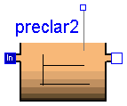
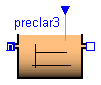

This package provides one dynamic and two static ASM1 primary clarifier models based on Otterpohl [1]. Main Author: Gerald Reichl Technische Universitaet Ilmenau Faculty of Informatics and Automation Department Dynamics and Simulation of ecological Systems P.O. Box 10 05 65 98684 Ilmenau Germany email: gerald.reichl@tu-ilmenau.de Reference: [1] R. Otterpohl and M. Freund: Dynamic models for clarifier of activated sludge plants with dry and wet weather flows. Water Science and Technology. 26 (1992), pp. 1391-1400.
Copyright (C) 2000 - 2001, Gerald Reichl
The Modelica package is free software; it can be redistributed and/or modified under the terms of the Modelica license, see the license conditions and the accompanying disclaimer in the documentation of package Modelica in file "Modelica/package.mo".
WasteWater.ASM1.PreClar.preclar1

This is an ASM1 dynamic primary clarifier model based on the theory by Otterpohl and Freund.
| Name | Default | Description |
|---|---|---|
| V | 500 | Volume of primary clarifier tank [m3] |
model preclar1 "Dynamic ASM1 Primary Clarifier Model" // dynamic primary clarifier tank, based on Otterpohl // to be used for feed forward calculation, e.g. influent data needed import Modelica.Math.log; package WWU = WasteWaterUnits; extends WasteWater.Icons.preclar1; // tank specific parameters parameter Modelica.SIunits.Volume V=500 "Volume of primary clarifier tank"; Real hrt_h "hydraulic residence time in primary sedimentation tank [h]"; // Real hrt_min "hydraulic residence time in primary sedimentation tank [min]"; Real n_COD "efficiency of COD removal [%]"; Real n_X "efficiency transformed to particulate fractions [%]"; WWU.MassConcentration Si "Soluble inert organic matter"; WWU.MassConcentration Ss "Readily biodegradable substrate"; WWU.MassConcentration Xi "Particulate inert organic matter"; WWU.MassConcentration Xs "Slowly biodegradable substrate"; WWU.MassConcentration Xbh "Active heterotrophic biomass"; WWU.MassConcentration Xba "Active autotrophic biomass"; WWU.MassConcentration Xp "Particulate products from biomass decay"; WWU.MassConcentration So "Dissolved oxygen"; WWU.MassConcentration Sno "Nitrate and nitrite nitrogen"; WWU.MassConcentration Snh "Ammonium nitrogen"; WWU.MassConcentration Snd "Soluble biodegradable organic nitrogen"; WWU.MassConcentration Xnd "Particulate biodegradable organic nitrogen"; WWU.Alkalinity Salk "Alkalinity"; Real CODin; Real CODout; Real XCODin; Real H; ASM1.Interfaces.WWFlowAsm1in In; ASM1.Interfaces.WWFlowAsm1out Out; ASM1.Interfaces.WWFlowAsm1out MeasurePort; equation // calculation of the hydraulic residence time hrt_h = V/In.Q*24; //hrt_min = V/In.Q * 24 * 60; // n_COD according Otterpohl and Freund 1992 "Dynamic Models for Clarifiers" n_COD = 2.7*(log(hrt_h*hrt_h) + 9)/100; // n_COD according Otterpohl 1995, Dissertation // n_COD = (1.45 + 6.15 * log(hrt_min))/100; XCODin = In.Xi + In.Xs + In.Xbh + In.Xba + In.Xp; // particulate COD in the influent CODin = In.Si + In.Ss + XCODin; // total COD in the influent CODout = Out.Si + Out.Ss + Out.Xi + Out.Xs + Out.Xbh + Out.Xba + Out.Xp; H = n_COD*CODin/XCODin; // n_X can not be greater than 1 // therefore is this check n_X = if H > 0.95 then 0.95 else if H < 0.05 then 0.05 else H; // in this case the model needs to be modified by a new n_COD // n_COD_? = (2.88*XCODin/CODin - 0.118) * n_COD; // volume dependent dilution term of each concentration der(Si) = (In.Si - Si)*In.Q/V; der(Ss) = (In.Ss - Ss)*In.Q/V; der(Xi) = (In.Xi - Xi)*In.Q/V; der(Xs) = (In.Xs - Xs)*In.Q/V; der(Xbh) = (In.Xbh - Xbh)*In.Q/V; der(Xba) = (In.Xba - Xba)*In.Q/V; der(Xp) = (In.Xp - Xp)*In.Q/V; der(So) = (In.So - So)*In.Q/V; der(Sno) = (In.Sno - Sno)*In.Q/V; der(Snh) = (In.Snh - Snh)*In.Q/V; der(Snd) = (In.Snd - Snd)*In.Q/V; der(Xnd) = (In.Xnd - Xnd)*In.Q/V; der(Salk) = (In.Salk - Salk)*In.Q/V; // Outputs // this is just a reduction of particulate substances; n_X*X is not stored // so the amount of primary sludge removed is not calculated Out.Q + In.Q = 0; Out.Si = Si; Out.Ss = Ss; Out.Xi = (1 - n_X)*Xi; Out.Xs = (1 - n_X)*Xs; Out.Xbh = (1 - n_X)*Xbh; Out.Xba = (1 - n_X)*Xba; Out.Xp = (1 - n_X)*Xp; Out.So = So; Out.Sno = Sno; Out.Snh = Snh; Out.Snd = Snd; Out.Xnd = (1 - n_X)*Xnd; Out.Salk = Salk; MeasurePort.Si = Si; MeasurePort.Ss = Ss; MeasurePort.Xi = (1 - n_X)*Xi; MeasurePort.Xs = (1 - n_X)*Xs; MeasurePort.Xbh = (1 - n_X)*Xbh; MeasurePort.Xba = (1 - n_X)*Xba; MeasurePort.Xp = (1 - n_X)*Xp; MeasurePort.So = So; MeasurePort.Sno = Sno; MeasurePort.Snh = Snh; MeasurePort.Snd = Snd; MeasurePort.Xnd = (1 - n_X)*Xnd; MeasurePort.Salk = Salk; end preclar1;
WasteWater.ASM1.PreClar.preclar2
This is an ASM1 static primary clarifier model based on the theory by Otterpohl and Freund.
| Name | Default | Description |
|---|---|---|
| V | 500 | Volume of primary clarifier tank [m3] |
model preclar2 "Static ASM1 Primary Clarifier Model" // static primary clarifier tank, based on Otterpohl // to be used for feed forward calculation, e.g. influent data needed import Modelica.Math.log; package WWU = WasteWaterUnits; extends WasteWater.Icons.preclar2; // tank specific parameters parameter Modelica.SIunits.Volume V=500 "Volume of primary clarifier tank"; Real hrt_h "hydraulic residence time in primary sedimentation tank [h]"; //Real hrt_min "hydraulic residence time in primary sedimentation tank [min]"; Real n_COD "efficiency of COD removal [%]"; Real n_X "efficiency transformed to particulate fractions [%]"; WWU.MassConcentration Si "Soluble inert organic matter"; WWU.MassConcentration Ss "Readily biodegradable substrate"; WWU.MassConcentration Xi "Particulate inert organic matter"; WWU.MassConcentration Xs "Slowly biodegradable substrate"; WWU.MassConcentration Xbh "Active heterotrophic biomass"; WWU.MassConcentration Xba "Active autotrophic biomass"; WWU.MassConcentration Xp "Particulate products from biomass decay"; WWU.MassConcentration So "Dissolved oxygen"; WWU.MassConcentration Sno "Nitrate and nitrite nitrogen"; WWU.MassConcentration Snh "Ammonium nitrogen"; WWU.MassConcentration Snd "Soluble biodegradable organic nitrogen"; WWU.MassConcentration Xnd "Particulate biodegradable organic nitrogen"; WWU.Alkalinity Salk "Alkalinity"; Real CODin; Real CODout; Real XCODin; Real H; ASM1.Interfaces.WWFlowAsm1in In; ASM1.Interfaces.WWFlowAsm1out Out; ASM1.Interfaces.WWFlowAsm1out MeasurePort; equation // calculation of the hydraulic residence time hrt_h = V/In.Q*24; //hrt_min = V/In.Q * 24 * 60; // n_COD according Otterpohl and Freund 1992 "Dynamic Models for Clarifiers" n_COD = 2.7*(log(hrt_h*hrt_h) + 9)/100; // n_COD according Otterpohl 1995, Dissertation // n_COD = (1.45 + 6.15 * log(hrt_min))/100; XCODin = In.Xi + In.Xs + In.Xbh + In.Xba + In.Xp; // particulate COD in the influent CODin = In.Si + In.Ss + XCODin; // total COD in the influent CODout = Out.Si + Out.Ss + Out.Xi + Out.Xs + Out.Xbh + Out.Xba + Out.Xp; H = n_COD*CODin/XCODin; // n_X can not be greater than 1 // therefore is this check n_X = if H > 0.95 then 0.95 else if H < 0.05 then 0.05 else H; // in this case the model needs to be modified by a new n_COD // n_COD_? = (2.88*XCODin/CODin - 0.118) * n_COD; // volume dependent dilution term of each concentration 0 = (In.Si - Si)*In.Q/V; 0 = (In.Ss - Ss)*In.Q/V; 0 = (In.Xi - Xi)*In.Q/V; 0 = (In.Xs - Xs)*In.Q/V; 0 = (In.Xbh - Xbh)*In.Q/V; 0 = (In.Xba - Xba)*In.Q/V; 0 = (In.Xp - Xp)*In.Q/V; 0 = (In.So - So)*In.Q/V; 0 = (In.Sno - Sno)*In.Q/V; 0 = (In.Snh - Snh)*In.Q/V; 0 = (In.Snd - Snd)*In.Q/V; 0 = (In.Xnd - Xnd)*In.Q/V; 0 = (In.Salk - Salk)*In.Q/V; // Outputs // this is just a reduction of particulate substances; n_X*X is not stored // so the amount of primary sludge removed is not calculated Out.Q + In.Q = 0; Out.Si = Si; Out.Ss = Ss; Out.Xi = (1 - n_X)*Xi; Out.Xs = (1 - n_X)*Xs; Out.Xbh = (1 - n_X)*Xbh; Out.Xba = (1 - n_X)*Xba; Out.Xp = (1 - n_X)*Xp; Out.So = So; Out.Sno = Sno; Out.Snh = Snh; Out.Snd = Snd; Out.Xnd = (1 - n_X)*Xnd; Out.Salk = Salk; MeasurePort.Si = Si; MeasurePort.Ss = Ss; MeasurePort.Xi = (1 - n_X)*Xi; MeasurePort.Xs = (1 - n_X)*Xs; MeasurePort.Xbh = (1 - n_X)*Xbh; MeasurePort.Xba = (1 - n_X)*Xba; MeasurePort.Xp = (1 - n_X)*Xp; MeasurePort.So = So; MeasurePort.Sno = Sno; MeasurePort.Snh = Snh; MeasurePort.Snd = Snd; MeasurePort.Xnd = (1 - n_X)*Xnd; MeasurePort.Salk = Salk; end preclar2;
Inverse ASM1 static primary clarifier model

This is a special case of the ASM1 static primary clarifier model. Here measurement data at the end (effluent) of the preclaryfier needs to be provided. This is typical for some real plants. Influent is then calculated. Dimension of InPort is 4: 1 - Chemical Oxygen Demand (COD) at effluent of primary clarifier 2 - nitrate nitrogen (Sno) at effluent of primary clarifier 3 - ammonium nitrogen (Snh) at effluent of primary clarifier 4 - pH-value at effluent of primary clarifier
| Name | Default | Description |
|---|---|---|
| V | 500 | Volume of primary clarifier tank [m3] |
| aSi | 5/100 | Fraction of Si of the total COD in the influent |
| aSs | 15/100 | Fraction of Ss of the total COD in the influent |
| aXi | 15/100 | Fraction of Xi of the total COD in the influent |
| aXs | 45/100 | Fraction of Xs of the total COD in the influent |
| aXbh | 20/100 | Fraction of Xbh of the total COD in the influent |
| aXba | 0/100 | Fraction of Xba of the total COD in the influent |
| aXp | 0/100 | Fraction of Xp of the total COD in the influent |
| aSo | 0.0 | Dissolved oxygen in the inflow [mg/l] |
| aSnd | 1/100 | Fraction Snd of Ss in the influent |
| aXnd | 3/100 | Fraction Xnd of Xs in the influent |
| n_corr | 1.0 | Correction faktor for the efficiency function |
model preclar3 "Inverse ASM1 Static Primary Clarifier Model" //static primary clarifier tank // to be used for backward calculation, e.g. effluent concentration data needed // signals need to be in the secuence COD, Sno, Snh, pH in the inputtable import Modelica.Math.log; extends WasteWater.Icons.preclar2; package WWU = WasteWater.WasteWaterUnits; // Interfaces.MeasurePort MeasurePort annotation (extent=[32, 90; 42, 100]); // tank specific parameters parameter Modelica.SIunits.Volume V=500 "Volume of primary clarifier tank"; parameter Real aSi=5/100 "Fraction of Si of the total COD in the influent"; parameter Real aSs=15/100 "Fraction of Ss of the total COD in the influent"; parameter Real aXi=15/100 "Fraction of Xi of the total COD in the influent"; parameter Real aXs=45/100 "Fraction of Xs of the total COD in the influent"; parameter Real aXbh=20/100 "Fraction of Xbh of the total COD in the influent"; parameter Real aXba=0/100 "Fraction of Xba of the total COD in the influent"; parameter Real aXp=0/100 "Fraction of Xp of the total COD in the influent"; parameter Real aSo=0.0 "Dissolved oxygen in the inflow [mg/l]"; parameter Real aSnd=1/100 "Fraction Snd of Ss in the influent"; parameter Real aXnd=3/100 "Fraction Xnd of Xs in the influent"; parameter Real n_corr=1.0 "Correction faktor for the efficiency function"; Real hrt_h "hydraulic residence time in primary sedimentation tank [h]"; //Real hrt_min "hydraulic residence time in primary sedimentation tank [min]"; Real n_COD "efficiency of COD removal [%]"; Real n_X "efficiency transformed to particulate fractions [%]"; WWU.MassConcentration Si "Soluble inert organic matter"; WWU.MassConcentration Ss "Readily biodegradable substrate"; WWU.MassConcentration Xi "Particulate inert organic matter"; WWU.MassConcentration Xs "Slowly biodegradable substrate"; WWU.MassConcentration Xbh "Active heterotrophic biomass"; WWU.MassConcentration Xba "Active autotrophic biomass"; WWU.MassConcentration Xp "Particulate products from biomass decay"; WWU.MassConcentration So "Dissolved oxygen"; WWU.MassConcentration Sno "Nitrate and nitrite nitrogen"; WWU.MassConcentration Snh "Ammonium nitrogen"; WWU.MassConcentration Snd "Soluble biodegradable organic nitrogen"; WWU.MassConcentration Xnd "Particulate biodegradable organic nitrogen"; WWU.Alkalinity Salk "Alkalinity"; Real COD; Real CODin; Real CODout; Real XCOD; Real H; ASM1.Interfaces.WWFlowAsm1in In; ASM1.Interfaces.WWFlowAsm1out Out; Modelica.Blocks.Interfaces.InPort MeasurePort(final n=4); equation // calculation of the hydraulic residence time hrt_h = V/In.Q*24; //hrt_min = V/In.Q * 24 * 60; // n_COD according Otterpohl and Freund 1992 "Dynamic Models for Clarifiers" n_COD = n_corr*2.7*(log(hrt_h*hrt_h) + 9)/100; // n_COD according Otterpohl 1995, Dissertation // n_COD = (1.45 + 6.15 * log(hrt_min))/100; XCOD = In.Xi + In.Xs + In.Xbh + In.Xba + In.Xp; // particulate COD in the influent COD = In.Si + In.Ss + XCOD; // total COD in the influent CODin = MeasurePort.signal[1]/(1 - n_COD); // total COD in the influent // above two CODs sould be the same CODout = Out.Si + Out.Ss + Out.Xi + Out.Xs + Out.Xbh + Out.Xba + Out.Xp; // this should be the same as MeasurePort.signal[1] H = n_COD*COD/XCOD; // n_X can not be greater than 1 // therefor this check n_X = if H > 0.95 then 0.95 else if H < 0.05 then 0.05 else H; // in this case the model needs to be modified by a new n_COD // n_COD_? = (2.88*XCODin/CODin - 0.118) * n_COD; // volume dependent dilution term of each concentration 0 = (In.Si - Si)*In.Q/V; 0 = (In.Ss - Ss)*In.Q/V; 0 = (In.Xi - Xi)*In.Q/V; 0 = (In.Xs - Xs)*In.Q/V; 0 = (In.Xbh - Xbh)*In.Q/V; 0 = (In.Xba - Xba)*In.Q/V; 0 = (In.Xp - Xp)*In.Q/V; 0 = (In.So - So)*In.Q/V; 0 = (In.Sno - Sno)*In.Q/V; 0 = (In.Snh - Snh)*In.Q/V; 0 = (In.Snd - Snd)*In.Q/V; 0 = (In.Xnd - Xnd)*In.Q/V; 0 = (In.Salk - Salk)*In.Q/V; Out.Q + In.Q = 0; // Inputs In.Si = aSi*CODin; In.Ss = aSs*CODin; In.Xi = aXi*CODin; In.Xs = aXs*CODin; In.Xbh = aXbh*CODin; In.Xba = aXba*CODin; In.Xp = aXp*CODin; In.So = aSo; In.Sno = MeasurePort.signal[2]; In.Snh = MeasurePort.signal[3]; In.Snd = aSnd*In.Ss; In.Xnd = aXnd*In.Xs; In.Salk = 1.8*exp(MeasurePort.signal[4] - 6.4); // Outputs Out.Si = Si; Out.Ss = Ss; Out.Xi = (1 - n_X)*Xi; Out.Xs = (1 - n_X)*Xs; Out.Xbh = (1 - n_X)*Xbh; Out.Xba = (1 - n_X)*Xba; Out.Xp = (1 - n_X)*Xp; Out.So = So; Out.Sno = Sno; Out.Snh = Snh; Out.Snd = Snd; Out.Xnd = (1 - n_X)*Xnd; Out.Salk = Salk; end preclar3;